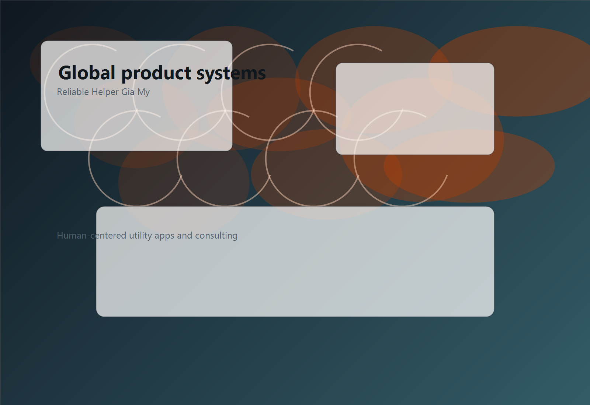

What the team is building, refining, and preparing next.
This page highlights the current direction of Reliable Helper Gia My across product categories, consulting work, quality systems, and marketplace readiness. It is designed as a company update hub for partners, users, and prospective clients.
0
Published utility app products
0
Core service capabilities
0%
English-first, global-ready products
0+
Ad network partners integrated
Latest updates
Recent product and operational direction.
Expanding the utility app lineup for real everyday scenarios
The team continues to refine and extend applications across focus improvement, habit tracking, idea capture, decision support, mood logging, and device status monitoring. Current work emphasizes clarity, lower interaction friction, and stronger long-term usefulness.
Strengthening consulting support for design and full-cycle product development
Reliable Helper Gia My is deepening its external service scope for teams that need utility app design consulting and end-to-end app R&D consulting, especially for products preparing for release in Western markets.
Ongoing improvements in privacy, marketplace, and ad monetization readiness
Internal workstreams continue to track privacy rules, age-related obligations, app store policy expectations, and ad mediation platform requirements to support responsible monetization and publication standards.
Prism Life 鈥?focus, habit, and mood tracking suite development in progress
Prism Life is the team's productivity-oriented app brand, designed to help users boost efficiency and self-growth through actionable focus tools, structured habit tracking, and reflective mood journaling. Development of refined feature sets is ongoing.
PopTooly 鈥?everyday life convenience tools entering refinement stage
PopTooly is built around the idea that small conveniences accumulate into a meaningfully lighter daily experience. Features covering idea capture, quick-decision support, and device diagnostics are progressing through design refinement and stability testing.
Current team priorities
Where the team's focus is right now.
Operational Priority
Sharpening product positioning for utility apps so users can immediately understand practical value, onboarding logic, and everyday use frequency 鈥?especially for first-time users in European and North American markets.
Design Priority
Balancing clean interaction models with motion, warmth, and product personality so tools feel efficient without becoming sterile. We are actively refining visual identity and interaction consistency across both app brands.
Engineering Priority
Maintaining reliable releases, scalable feature foundations, and efficient cross-platform operations while sustaining full compliance with app store policies, privacy regulations, and ad platform requirements.
Ongoing initiatives
Work streams active across the team.
Privacy regulation monitoring
Tracking GDPR, UK GDPR, CCPA, COPPA, LGPD, PIPL, APPI, and other evolving global privacy laws to ensure our apps and recommendations remain compliant across all active markets.
Ad platform compliance integration
Maintaining Consent Management Platform (CMP) integration, App Tracking Transparency consent flows, IAB TCF support, and age-gated advertising restrictions across all ad networks we work with.
IAP and subscription management
Refining subscription offers, trial UX, non-consumable unlock flows, and RevenueCat entitlement management for both Apple App Store and Google Play across Prism Life and PopTooly.
Stay connected
Business support and contact channels remain open for partners and users.
For business support, write to support@reliablehelpergiamy.com. For partnerships, collaboration opportunities, and project inquiries, contact contact@reliablehelpergiamy.com. The team operates from Hoa Lac High-Tech Park, Hanoi, Vietnam, while serving international markets.